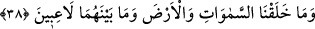
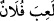
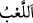
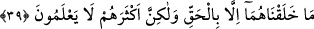

kaynağına geri döndü. Bu duruma şâhid olan Himyer’in geri kalanları da râhiplerin
dînini kabûl ettiler.
Buradan Yahudiliğin aslının Yemen’de olduğu anlaşılmaktadır. Keşfü’l-esrâr’da
böyle geçer.
Denilmiştir ki: İslâm’ın geldiği dönemde Himyer tarafında bir kuyu kazıldı. Kuyudan
hiç bozulmamış iki kadın cesedi çıktı. Bu kadınların başlarında gümüş bir levha olup
üzerine altınla bu kadınların isimleri Hubâ ve Tuleys yahut Hubâ ve Tamâdrâ yazılmıştı.
Yine levhada bu Tamâdrâ ve Hubâ’nın kabridir. Farklı rivâyetler bulunmakla beraber
mektubun devamında şunlar yazılıydı: Bunlar Tübba‘ın kızları olup Allah’tan başka ilâh
olmadığına şehâdet eder ve Allah’a hiçbir şeyi ortak koşmazlardı.
Bu durum göz önüne alındığında bunlardan önce ölenler arasında da bir takım sâlih
kişiler bulunabilir.
Allah ki ne yücedir Zât’ı ve tüm sıfatları
Yoktur asla benzeyen O’na nasıl düzen tutardı âlem
Birden fazla ilâh olsaydı aklı başında herkes bilir ki
Bir ülkede olmaz iki pâdişâh alt üst olunca halkın düzeni
Berî kalamaz bundan avâm havâs hiç kimse
Kendinden başka ilâh olmayan Allah’ın şânı ne yücedir! Allah bize kâfîdir, O’ndan
başka ilâh yoktur.
38. Biz gökleri, yeri ve bunlar arasında bulunanları, oyun ve eğlence olsun diye
yaratmadık.
“Biz gökleri, yeri ve bunlar arasında bulunanları” Yani bu iki cins arasında
bulunanları demektir. Semâvât ve arz kelimelerinin bir arada bulunmalarına nazaran
“aralarında bulunanlar” ifâdesi müennes olarak da okunmuştur. “Oyun ve eğlence olsun
diye” Yani bunların yaratılmasında sağlam bir maksad ve güzel bir gaye olmaksızın
“yaratmadık!” Kişi yaptığı işte pek maksadlı olmayıp sağlam bir hedefi yoksa, “
/filan kimse oynadı” denilir. Ta‘rîfât kitabında şöyle denilmiştir: “
/çocukların
işidir. Ardından faydasız “
/yani yorgunluk gelir.